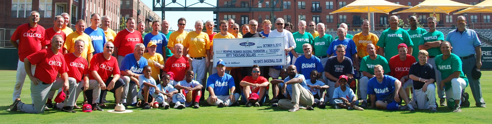
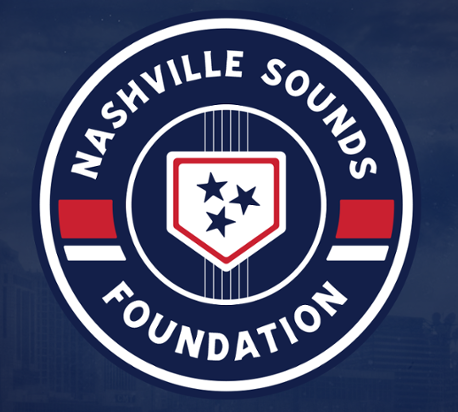
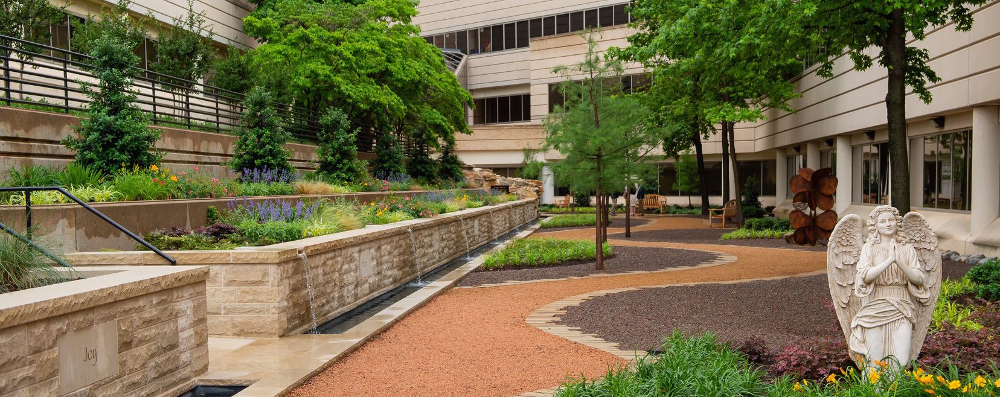
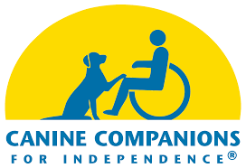
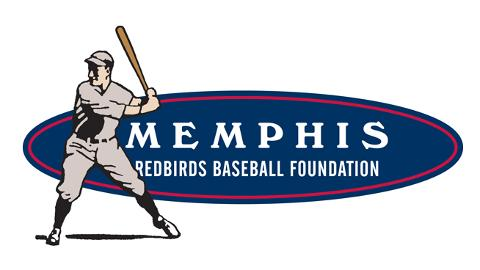
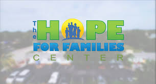
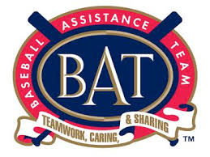
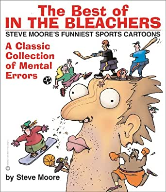
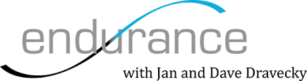

Donations
Over $2.3 million in charitable contributions since 1991
Our Impact
Making a difference through charitable giving
2,335,465
Dollars raised for charity
"A man's life means nothing except for the impact it has on others"
- Jackie Robinson
44
Charities Supported
Donation History
A legacy of giving through the decades
2024
Total Raised
$75,000

Bananas Foster
$75,0002023
Total Raised
$8,100

Marine Corps Scholarship Fund
$7,500Junior Junkanoo
$6002022
Total Raised
$121,310

Sox Charities
$90,000
Orioles Advocates
$18,310
Marine Corps Scholarship Fund
$7,500Once In A Lifetime
$5002021
Total Raised
$125,000

Nolan Ryan Foundation
$125,0002020
Total Raised
$37,642
Marine Corps Scholarship Fund
$26,000
Bimini Youth Development Foundation
$8,642
Special Operations Warrior Foundation
$3,0002019
Total Raised
$226,100

Nashville Sounds Foundation
$70,000
Continuing Contributions
$96,100Folds of Honor Foundation
$10,000

Pat Darby Hope Garden
$50,0002018
Total Raised
$71,000

Reds Community Fund
$71,0002017
Total Raised
$15,000

Anthony Rizzo Foundation
$15,0002016
Total Raised
$62,000

Jim "Catfish" Hunter ALS Foundation
$62,0002015
Total Raised
$70,500

Marlins Charities RBI Program
$70,5002014
Total Raised
$144,000
Cubs Charities RBI Program
$144,0002013
Total Raised
$84,050
Marine Corps Scholarship Fund
$74,000
Cafe Reconcile
$10,0502012
Total Raised
$101,330

Canine Companions For Independence
$62,330
Marine Corps Scholarship Fund
$25,000
Jim "Catfish" Hunter ALS Foundation
$14,0002011
Total Raised
$89,945

Susan G. Komen Foundation
$87,220
Wounded Warriors - Disabled Sports
$1,000
Family of Shannon Stone
$1,000
Plano Baseball Association
$7252010
Total Raised
$68,700

Memphis Redbirds Foundation
$67,000
Wounded Warriors - Disabled Sports
$1,000
Plano Baseball Association
$7002009
Total Raised
$431,750
Wounded Warriors - Disabled Sports
$431,000
Plano Baseball Association
$7502008
Total Raised
$58,510

Tony & Alicia Gwynn Foundation
$54,670
Plano Baseball Association
$3,8402007
Total Raised
$57,285

Miracle League
$53,245
Nolan Ryan Foundation
$2,160
Plano Baseball Association
$1,8802006
Total Raised
$34,700
Bimini, Bahamas
$20,000
Ron Kittle's Indiana Sports Charities
$12,000
Plano Baseball Association
$2,000
Umpiring School
$500

Hope for Families Center
$2002005
Total Raised
$2,000
Dan and Amy Carroll Project
$1,000
William Morris Cancer Fund
$1,0002004
Total Raised
$71,581
Randy Johnson Striking Out Homelessness
$63,576
Gary Hunter Make-A-Wish Trip
$5,425
Jim Catfish Hunter ALS Foundation
$2,000
India Baseball Coach of the Year Award
$380
Cal Ripken Sr. Foundation
$2002003
Total Raised
$74,523

Baseball Assistance Team (B.A.T.)
$38,863
Nolan Ryan Foundation
$17,400Negro League Reunion
$7,500
India Baseball Projects
$6,760

Best of In the Bleachers
$3,100
Gold Crown Foundation
$650
Jim Catfish Hunter ALS Foundation
$2502002
Total Raised
$123,300
Cal Ripken Sr. Foundation
$104,800
Baltimore Reads
$10,000
Jim Catfish Hunter ALS Foundation
$5,000
Cocker Kids Foundation
$3,5002001
Total Raised
$84,357

Chicago Cubs Care
$84,3572000
Total Raised
$36,368

Dave Dravecky's Outreach of Hope
$36,3681999
Total Raised
$38,500
Jim Catfish Hunter ALS Foundation
$38,5001998
Total Raised
$21,914
Nolan Ryan Foundation
$21,9141997
Total Raised
$1,000